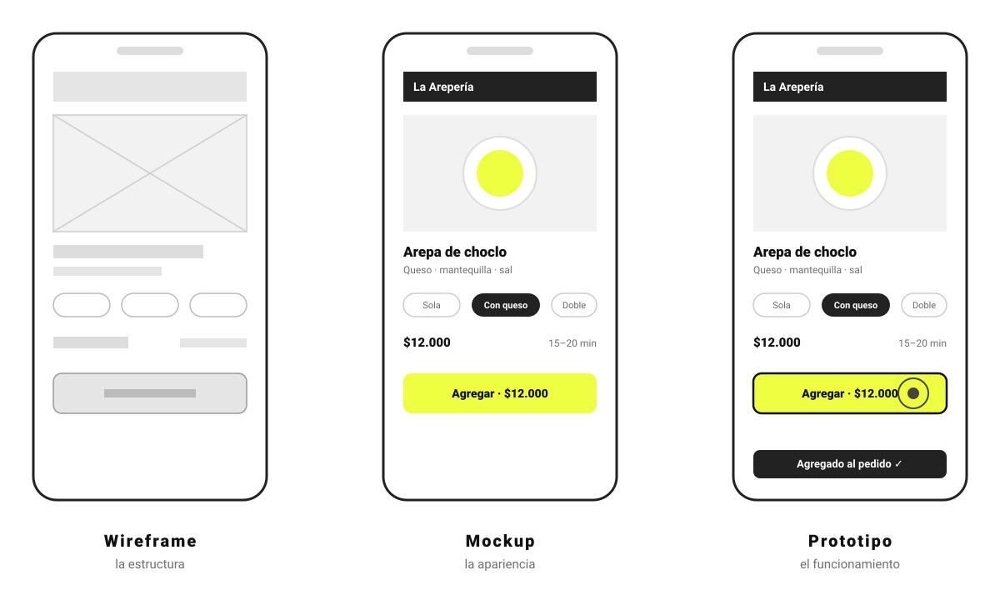
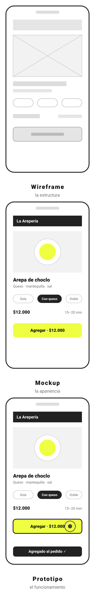

Gracias por la puntualidad
En breve comenzamos
Pensamiento
Sensorial
Clase 3
¿Qué es esta cosa?
¿En qué quedamos?
La clase pasada vimos los conceptos clave que nos ayudan a modelar la relación entre una persona y un sistema
Affordance¿Qué puedo hacer?
Significante¿Cómo sé que puedo hacerlo?
Restricción¿Qué no puedo hacer?
Mapping¿Cuál de todos, y con qué resultado?
Feedforward¿Qué va a pasar si lo hago?
Feedback¿Qué pasó?
Seis preguntas que le hicimos a un cajero.
Entre lo que una persona quiere hacer y lo que sabe hacer hay una distancia. Y entre lo que el sistema hace y lo que el usuario entiende, hay otra
Los dos golfos
Cuando cambiamos las reglas del UNO, cambiamos su interfaz: conservamos algunos significantes, pero modificamos la comprensión de lo que «permitía» y «restringía» cada carta
Las reglas de un juego son convenciones. En las pantallas pasa algo parecido: casi nada está determinado físicamente, tenemos que aprender qué podemos hacer
Por eso, en User Inyerface, uno de los primeros engaños es el botón que no es un botón
Ya tenemos construida en la cabeza una expectativa de cómo se ve y se comporta un botón. Es un lenguaje que aprendimos
Pero, ¿qué pasa si dejamos de pensar la interfaz solo como algo que ocurre en una pantalla?
Un apunte antes de seguir
Tres palabras que vamos a usar


De ahora en adelante, piensen cualquier representación que construyamos como una forma de investigar
Un prototipo no es una versión preliminar del producto. Es una forma de encontrar la respuesta a una pregunta que necesitamos resolver
Metodología
Design critique
Una interfaz no solo ayuda a completar una tarea: también expresa. Puede dar sensación de control, generar confianza o producir frustración
Por eso no las evaluamos según nuestros gustos. Intentamos entender qué está haciendo la interfaz para la persona que la va a usar
¿Cómo?
¿Por qué?
¿Para quién?
¿Para qué?
Las críticas no son juicios. Son preguntas.
El ejercicio de hoy no se trata de demostrar quién tiene la razón. Se trata de algo más difícil: quién escucha mejor
Actividad
Crítica de los cajeros
Al mirar el prototipo de otro grupo
- 01¿Qué fue claro y qué no? ¿Qué les hizo ruido?
- 02¿Qué esperaban que ocurriera, y qué ocurrió realmente?
- 03¿La interfaz atiende el rasgo de la persona para la que fue diseñada?
- 04Primero describan lo que vieron. Después interpreten por qué.
Receso
Quince minutos
¿Qué es lo que
realmente diseñamos?
Modelos e imágenes: los puentes entre el diseñador y el usuario
Hace unos años me tocó rediseñar el portal educativo Colombia Aprende. Cuando se lo mostré a los profesores, lo que a mí me parecía clarísimo a ellos les resultó confuso y extraño
Ellos venían de una interfaz pesada que, después de mucho cacharreo, les dejaba llegar exactamente al contenido que buscaban
Yo hice algo más simple. Pero, sin darme cuenta, les quité la sensación de control. Ellos necesitaban explorar y filtrar. Eso era lo más importante
Había diseñado un portal para mí, para el tipo de usuario que soy. Y no para las personas que de verdad lo usaban
Porque el usuario no llega vacío. Llega con experiencias, con hábitos, con convenciones y con una idea propia de cómo deberían funcionar las cosas
Un caso que nos va a acompañar toda la clase
Pedir comida por aplicaciones de domicilio
«Tengo hambre. No quiero pensar demasiado. Quiero comer algo rico. Y quiero que llegue rápido.»
¿Qué cree esta persona que está haciendo?
1 de 3 · lo que trae la persona
Modelo mental
La idea que la persona construye sobre cómo funciona algo.
Norman, 2013
No piensa «438 restaurantes con ocho filtros». Piensa «quiero comer». Esa idea se arma con experiencias anteriores, con convenciones y con la propia interacción, y no tiene por qué coincidir con el funcionamiento real.
Pero el sistema tiene que resolver esto:
explorar → filtrar → comparar → elegir → personalizar → confirmar → pagar
¿Cómo quiere funcionar el sistema?
2 de 3 · lo que propone el diseñador
Modelo conceptual
La explicación de cómo queremos que funcione el sistema.
Norman, 2013
El sistema tiene esa lógica: cientos de restaurantes, filtros, promociones, tiempos, pagos y estados. Tiene sus capacidades y sus relaciones entre acción y resultado.
La persona no ve directamente esa lógica. Tiene que descubrirla
¿De dónde saca la información para descubrirla?
3 de 3 · lo único que los conecta
Imagen del sistema
Todo lo que el sistema hace perceptible para que la persona entienda cómo funciona.
Norman, 2013
La interfaz es la parte central, pero no es la única. También los textos, los mensajes, los estados, las respuestas, las instrucciones y la ayuda.
El usuario tiene que poder construir una explicación del sistema a partir de lo que el sistema le hace perceptible.
El diseñador propone
Nuestro trabajo está en el medio.
Los tres no tienen por qué coincidir. Ahí está el trabajo del diseño
La otra idea de Norman
¿En la cabeza o en el mundo?
Supongamos que la persona tiene que recordar qué opción tenía envío gratis, cuánto costaba la que vio hace un minuto, qué filtros aplicó y cuánto va a pagar al final
La misma información, en dos lugares distintos
En la cabeza
La persona tiene que acordarse: cuánto costaba, qué descartó, qué prometía cada opción. Trabajo cognitivo que cargamos sobre ella.
En el mundo
«Sin costo de envío». «Llega en 15-20 min». «Total: $28.500». «Tus pedidos anteriores». La información está disponible cuando la necesita.
Más preciso que «el conocimiento está en el mundo»: parte de la información que necesitamos para actuar puede estar disponible en el entorno.
La pregunta de diseño no es «¿cómo la hago fácil?». Es ¿qué trabajo cognitivo le estoy trasladando a la persona?
No estamos diseñando una pantalla. Estamos diseñando cómo una persona se encuentra con un sistema
Qué puede hacer
Qué puede entender
Qué información ve
Qué necesita recordar
Qué puede descubrir
Eso es una mediación, no una superficie.
Cierre
Al principio hablamos de lo que pasa cuando sacamos la interacción de la pantalla: objetos, convenciones, experiencias sensoriales
Ahora sabemos algo más. Una interfaz no solamente organiza acciones: también organiza lo que podemos percibir, entender, recordar y hacer
Por eso diseñar una interfaz es diseñar una forma de relación. Y esa relación siempre ocurre con alguien
No diseñamos para nosotros. Diseñamos para alguien que llega con su propia historia, sus propias expectativas y su propia manera de entender el mundo
Para la próxima
Construir la imagen del sistema
La actividad queda como tarea: un prototipo móvil, con el flujo completo hasta confirmar el pedido, que otro grupo pueda usar sin que ustedes expliquen nada. Se evalúa el proceso: el boceto, las decisiones y los cinco conceptos
La consigna completa y las fichas están acá
catedra.dejesumensaje.com/pensamiento-sensorial/imagen-del-sistemaReferentes
- Norman, D. A. The Design of Everyday Things (1988; ed. rev., 2013). Capítulo 1: modelo conceptual, modelo mental e imagen del sistema. Capítulo 3: el conocimiento en la cabeza y en el mundo.
- Gibson, J. J. The Ecological Approach to Visual Perception (1979). De donde viene «affordance», que trabajamos la clase pasada.
- Hutchins, E. Cognition in the Wild (1995). Para ir más lejos: pensar no ocurre solo dentro de la cabeza.